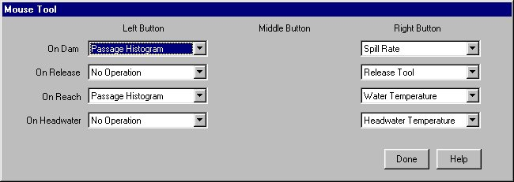

Mouse Tool: Redefining Mouse Functions on River Map
You can define the function of the mouse buttons when used on the River Map by selecting File Mouse Tool. In addition, the Mouse Tool command is represented by
Mouse Tool. In addition, the Mouse Tool command is represented by  in the Toolbar. Location-specific output windows can be opened by placing the pointer on the desired location on the River Map and clicking the appropriate mouse button. The Status Bar displays which Dam, Reach, or Headwater is active. The exact function of the mouse button depends on where the pointer is located, which button is pressed, and how the functions have been assigned. For example, On Release can be set to open a Release Tool or to have No Operation; the default setting opens a Release Tool window with a right-click on a Release Site. Four categories of selection are available: On Dam, On Reach, On Release, and On Headwater.
in the Toolbar. Location-specific output windows can be opened by placing the pointer on the desired location on the River Map and clicking the appropriate mouse button. The Status Bar displays which Dam, Reach, or Headwater is active. The exact function of the mouse button depends on where the pointer is located, which button is pressed, and how the functions have been assigned. For example, On Release can be set to open a Release Tool or to have No Operation; the default setting opens a Release Tool window with a right-click on a Release Site. Four categories of selection are available: On Dam, On Reach, On Release, and On Headwater.
The actions of each mouse button are changed by selecting the desired function from each category. Any changes you make take effect immediately and do not need to be applied. The Middle Button selections are provided for a three-button mouse; the settings are unavailable if you are using a two-button mouse.
- Done: Closes Mouse Tool window.
- Help: Opens context-sensitive help information

Mouse Tool identifies mouse button functions on the River Map